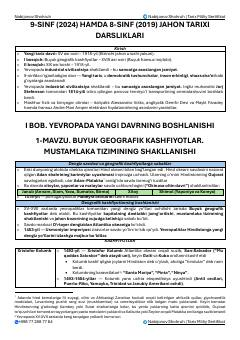

9JTarix fanidan milliy sertifikat imtihoniga tayyorgarlik uchun 9-sinf jahon tarixi qo'llanmasi.
Mazkur qo'llanma 9-sinf jahon tarixi darsliklari asosida tuzilgan bo'lib, yangi davr tarixi, buyuk geografik kashfiyotlar va industrial jamiyat asoslarini o'rganish uchun mo'ljallangan. Materiallar tarix fanidan milliy sertifikat imtihonlariga tayyorgarlik ko'rayotganlar uchun qulay tarzda qisqacha jamlangan.